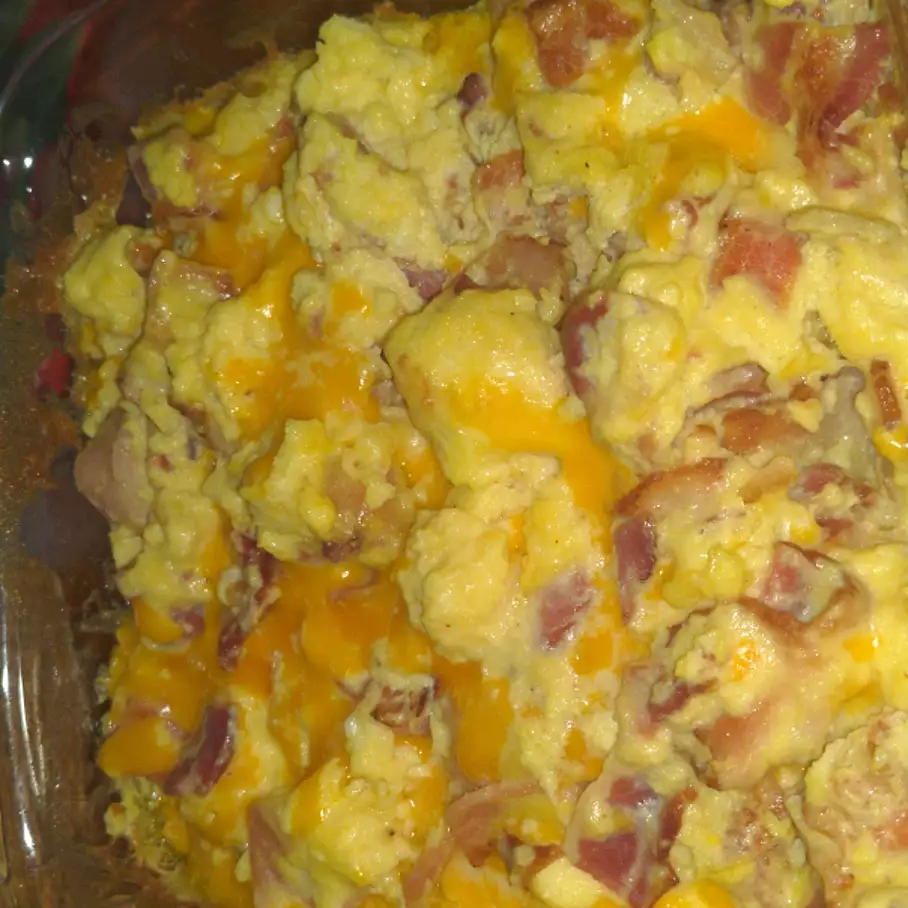

Oven Scrambled Eggs

Description
These baked scrambled eggs are light and fluffy and are
a snap to put together for a big crowd. I usually make
two pans for our Christmas brunch, and I never have
many leftovers!
Ingredients
- 1/2 cup butter or margarine, melted
- 24 eggs
- 2 and 1/4 teaspoons salt
- 2 and 1/2 cups milk
Steps
- Preheat the oven to 350 degrees F (175 degrees C).
- Pout melted butter into a 9x13-inch glass baking dish.
-
Whis together eggs and salt in large bowl until well-blended
. Gradually whisk in milk. Pour egg mixture into the buttered
dish.
-
Bake uncovered in the preheated oven for 10 minutes. Stir egg
mixture and continue to bake until eggs are set, 10 to 15 minutes more.